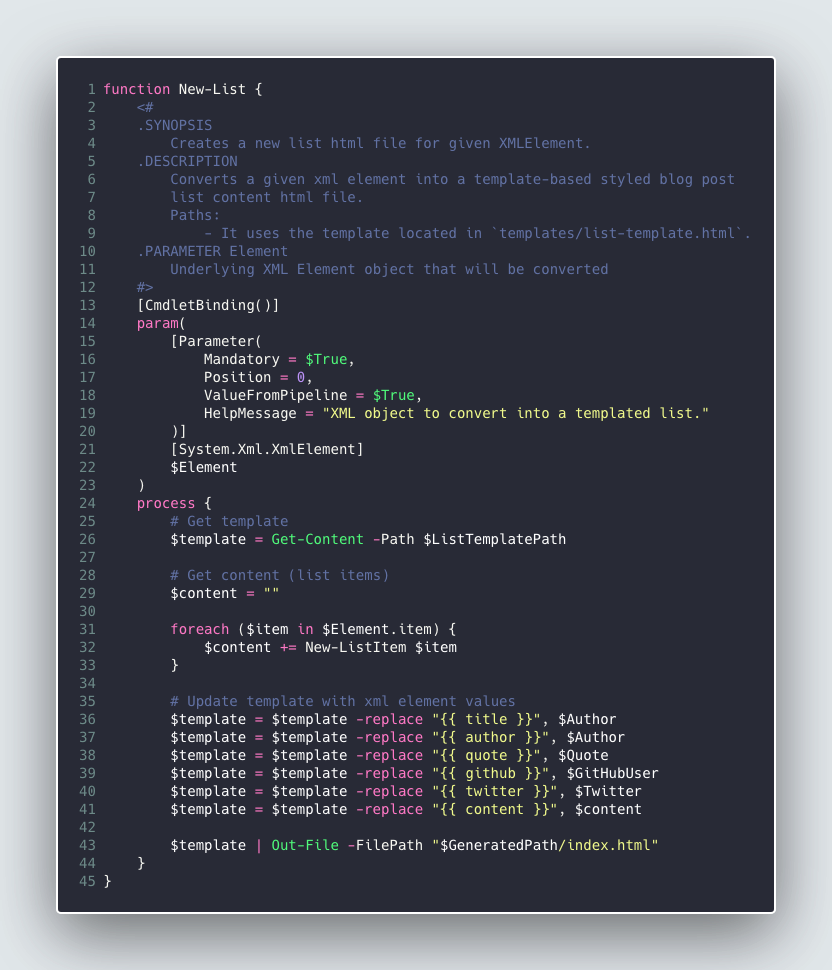
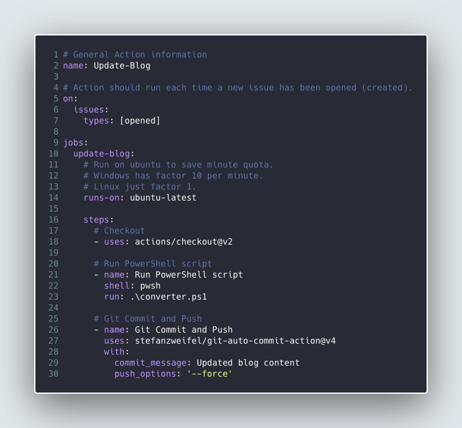
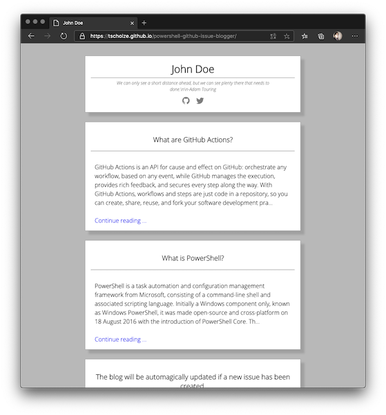

Ich wollte schon länger einmal mit GitHub Actions und PowerShell herum experimentieren. Nach etlichen Gedanken fand ich einen kleinen Usecase und somit ein kleines Projekt zu Stande (GitHub) womit ich beide verbinden kann.
Um was geht es?
Es geht darum, dass ich mittels GitHub Issues, GitHub Actions und GitHub Pages unter der zu Hilfenahme von PowerShell eine Art Proof-Of-Concept erstellen wollte wie man damit einen statischen Blog basteln kann.

Ablauf
Kurz gesagt, der User erstellt ein neues Issue welches den Inhalt des entsprechenden Blog-Beitrages enthält. Dies löst eine GitHub Action auf welche den bisherigen Blog auschecked, ein PowerShell Skript ausführt und die Änderungen wieder einchecked.

Veröffentlichung
Diese Blog-Dateien liegen in einem von GitHub für Pages verwendeten Order und werden so mit gleich öffentlich zugänglich gemacht.

Mehr
Den kompletten Artikel könnt ihr wie so oft bei Dr. Windows lesen. Der Quelltext liegt auf GitHub für euch bereit.